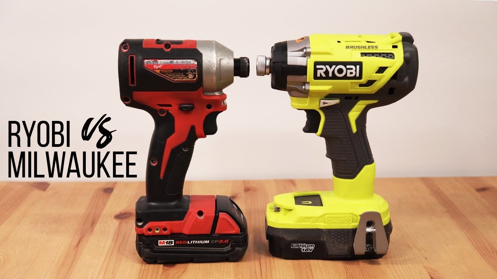

Milwaukee Tools: The Gold Standard in Power Tools
Milwaukee tools have consistently set the bar for durability, performance, and innovation in the power tool industry. Founded in 1924, Milwaukee Tool has spent nearly a century developing tools that meet the demands of professionals across construction, electrical, plumbing, and other trades. Their commitment to quality is evident in their meticulous manufacturing processes and attention to detail. From the iconic Sawzall reciprocating saw to the advanced FUEL brushless technology, Milwaukee tools are designed to deliver power and reliability in even the harshest job site conditions.Key Features
One of Milwaukee’s standout features is its M12 and M18 cordless tool systems, which provide unparalleled versatility. The M18 line offers more than 200 tools powered by the same battery platform, making it the most comprehensive cordless system in the industry. These batteries are engineered for longer runtimes and faster charging, enabling tradespeople to work efficiently without interruptions. Moreover, Milwaukee's REDLINK PLUS intelligence ensures that tools operate at peak performance while preventing damage from overheating or overloading.Milwaukee also excels in innovation, regularly introducing groundbreaking technologies that redefine user expectations. The ONE-KEY system, for example, integrates Bluetooth technology into tools, allowing users to track, manage, and customize their equipment via a smartphone app. This not only improves productivity but also enhances tool security. Combined with ergonomic designs and rugged construction, Milwaukee tools consistently outperform competitors and remain a top choice for professionals who demand excellence.
- Better Performance
- Advanced brushless motor technology provides smoother operation, more torque, and less maintenance.
- Designed for professional-grade use, ensuring faster cutting, drilling, or fastening with less effort.
- More Durable
- Milwaukee is praised for superior cold weather performance and durability under harsh conditions.
- Tested for extreme conditions, including cold weather and high heat, ensuring reliability year-round.
- Longer Battery Life
- Powered by REDLITHIUM batteries, which offer superior heat management and longer runtime.
- Milwaukee's battery systems are designed for fast recharging and sustained use under heavy loads.
- May not be budget friendly but it sure does the job well
Milwaukee: Nothing but HEAVY DUTY

Ryobi: The Budget-Friendly Contender
Ryobi caters to DIY enthusiasts and homeowners with its affordable yet reliable tools. While not as rugged or powerful as Milwaukee, Ryobi tools are known for their value and versatility. The ONE+ battery platform, compatible with over 280 tools, offers an impressive range of options for budget-conscious users. Though not built for heavy-duty professional use, Ryobi tools are perfect for light to medium tasks, making them a popular choice for casual users.DeWalt: A Trusted Name in the Industry
DeWalt is another well-respected brand in the power tool market, particularly known for its tough and reliable tools. DeWalt’s XR series offers powerful brushless motors and durable designs, making them ideal for demanding job sites. While DeWalt tools are comparable to Milwaukee in some aspects, they often fall short in battery life and the breadth of their cordless ecosystem. Nonetheless, DeWalt remains a strong contender, especially for tradespeople who value durability and simplicity.RIDGID: Reliable but Limited
RIDGID tools are renowned for their dependability and focus on plumbing and industrial applications. Their tools, such as pipe wrenches and press tools, are highly regarded in these specific trades. However, their cordless power tool offerings are not as extensive or innovative as Milwaukee’s. While RIDGID provides solid performance at a reasonable price point, it lacks the advanced technology and expansive ecosystem that set Milwaukee apart.Watch This Video about the Best Impact Driver
The Verdict: Milwaukee Reigns Supreme
While brands like Ryobi, DeWalt, and RIDGID each have their strengths, Milwaukee tools outshine them all by delivering unmatched quality, performance, and innovation. Milwaukee’s extensive M18 and M12 systems, coupled with cutting-edge features like ONE-KEY and REDLINK PLUS, make them the most versatile and reliable choice for professionals and serious DIYers alike. If you're looking for tools that can handle the toughest jobs while maximizing efficiency and durability, Milwaukee is the brand to beat.Convinced? Order HERE
Still not Convinced take a manliness test Here
These are some reasons why...
- You are waiting to grow more chest hair
- You were given a strict budget by your wife
- You don't actually use your tools, maybe you just like to look at them
Here is a nice chart about our friends the Bees. Check it out!